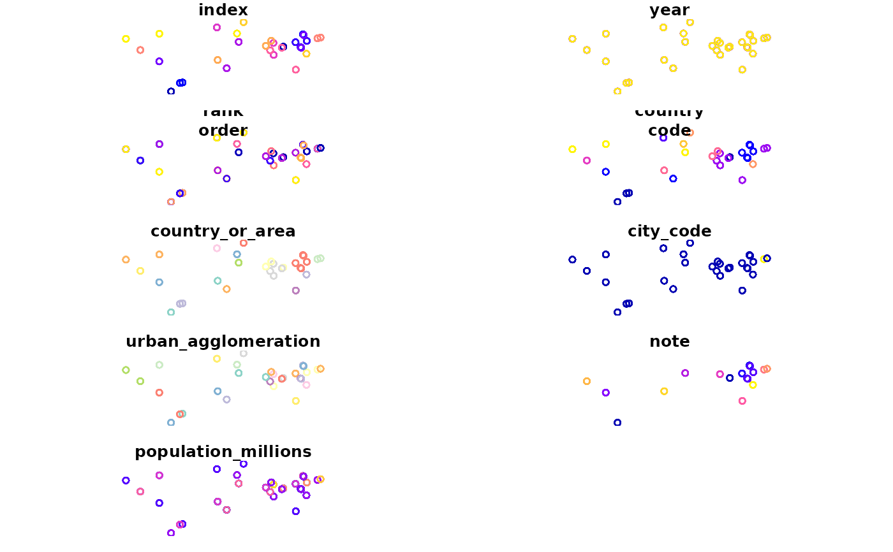

Dataset in a 'long' form from the United Nations population division with projections up to 2050. Includes only the top 30 largest areas by population at 5 year intervals.
urban_agglomerationsSelected variables:
year Year of population estimate
country_code Code of country
urban_agglomeration Name of the urban agglomeration
population_millions Estimated human population
geometry sfc_POINT
if (requireNamespace("sf", quietly = TRUE)) {
library(sf)
plot(urban_agglomerations)
}

# Code used to download the data:
if (FALSE) {
f = "WUP2018-F11b-30_Largest_Cities_in_2018_by_time.xls"
download.file(
destfile = f,
url = paste0("https://population.un.org/wup/Download/Files/", f)
)
library(dplyr)
library(sf)
urban_agglomerations = readxl::read_excel(f, skip = 16) %>%
st_as_sf(coords = c("Longitude", "Latitude"), crs = 4326)
names(urban_agglomerations)
names(urban_agglomerations) <- gsub(" |\\n", "_", tolower(names(urban_agglomerations)) ) %>%
gsub("\\(|\\)", "", .)
names(urban_agglomerations)
urban_agglomerations
usethis::use_data(urban_agglomerations, overwrite = TRUE)
file.remove("WUP2018-F11b-30_Largest_Cities_in_2018_by_time.xls")
}